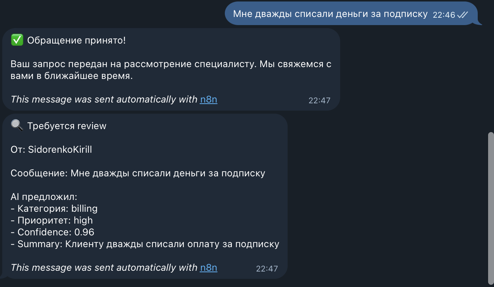
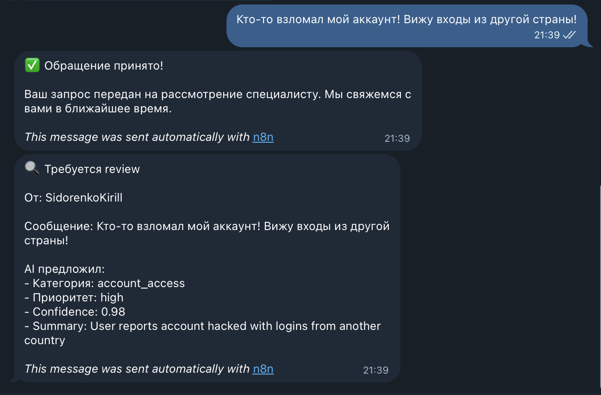

AI Triage Bot
Автоматизирует первичный разбор клиентских обращений: принимает сообщения в Telegram, определяет категорию и приоритет, создаёт тикет в Yandex Tracker и пишет лог в Google Sheets. Критичные и неоднозначные кейсы сразу передаёт на ручную проверку.
Сообщение клиента → AI triage → тикет в Yandex Tracker → лог в Google Sheets → ручная проверка для рискованных кейсов
Какую задачу решает
- Оператор вручную читает и сортирует каждое обращение
- Маршрут и приоритет зависят от конкретной смены
- Критичные кейсы легко потерять в общем потоке
- История разбора расползается по чатам и таблицам
- Рост объёма обращений требует больше ручной работы
- Обращение разбирается за секунды, а не за минуты
- 6 фиксированных категорий и детерминированная маршрутизация
- Тикет в трекере и лог в Google Sheets создаются сразу
- Critical и low-confidence не отдаются автоматике
- Команда получает уже разобранный и приоритизированный поток
Что входит в решение
Решение уже умеет принимать обращения из Telegram, нормализовывать сообщение, классифицировать его в одну из 6 категорий, рассчитывать приоритет и confidence, создавать тикет в Yandex Tracker и записывать результат в Google Sheets.
Telegram → Normalize → DeepSeek V3 → Parse → Validate │ confidence ≥ 0.8 confidence < 0.8 и not critical или critical │ │ Target queue Review queue

Авто-маршрут: confident non-critical обращение сразу уходит в профильную очередь

Ручная проверка: `critical` или `confidence < 0.8` уходят в review queue и reviewer-уведомление
Что уже проверено
В проекте есть отдельный eval workflow и рабочий benchmark-набор из 55 размеченных RU/EN кейсов: 50 из последнего canonical run и 5 regression-добавлений для billing/login boundary checks. Таблица ниже — это последний измеренный score canonical run от 12 марта 2026; после синхронизации benchmark expectations нужен следующий полный rerun.
| Метрика | Сейчас | Что это даёт | Контекст |
|---|---|---|---|
| Категория | 92% | Стабильный первичный triage | Последний 50-case canonical run |
| Маршрут | 92% | Обращение попадает в нужную команду | 6 фиксированных категорий |
| Human review trigger | 94% | Рискованные кейсы не уходят в full auto | `critical` или `confidence < 0.8` |
| Приоритет | 76% | Есть база для SLA и очередей | Сложнейшая метрика в кейсе |
| Время | ~3 сек | Поддержка не тратит минуты на сортировку | Вместо 3-5 минут вручную |
| Стоимость | $0.0001 | Масштабирование не упирается в LLM-бюджет | С текущей DeepSeek-конфигурацией |
Главное ограничение текущего кейса видно прямо в eval-логике: приоритет для `complaint` всё ещё может завышаться. Это не ломает маршрутизацию, но остаётся точкой следующей продуктовой итерации.
Почему это внедряемо
Человек остаётся в контуре
Система не пытается полностью заменить поддержку. `Critical` обращения и кейсы с низкой уверенностью модели всегда уходят на ручную проверку, поэтому автоматизация не повышает операционный риск.
Маршрутизация не зависит от настроения смены
В коде зафиксированы категории, очереди, fallback и правила boundary cases: broken existing behavior, access issues, billing-how-to, feature requests и complaint-сценарии. Это делает triage повторяемым и объяснимым.
Качество можно улучшать без догадок
В проекте уже есть eval workflow, логирование в Google Sheets и измеримые метрики качества. Значит, решение можно развивать по данным: видеть, где модель ошибается, и править prompt, routing rules или review-gate адресно.